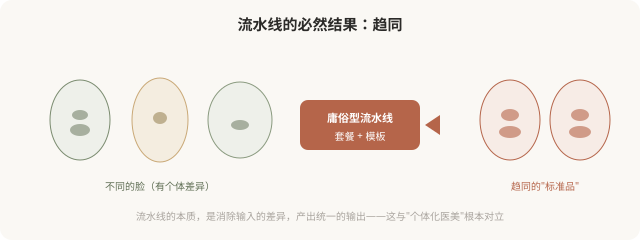

先说结论：庸俗型医美的核心机制是“流水线化”，套餐化设计、模板化操作、咨询师主导流程，把本来应该个体化的医美，变成批量生产的“标准品”。这条生产线高效、可复制、利润丰厚，但它必然产出趋同的结果，因为流水线的本质就是消除个体差异。理解这条生产线如何运作，是跳出庸俗型的前提。这一篇剖析庸俗型的“生产机制”。
医美流水线长什么样

流水线化的几个核心机制
机制一：咨询师主导。在庸俗型机构，“咨询师”（往往是非医疗人员）主导整个决策，评估诉求、推荐项目、确定套餐，医生只在最后执行。这绕过了医生的专业判断，把本应基于解剖和美学的决策，变成了基于销售的推销。
机制二：套餐化。把多个项目打包成“套餐”，听起来“划算”，实际是无视个体需求，你的问题可能只需要一个项目，但套餐让你做五个。套餐的本质是提高客单价，而非针对性解决问题。
机制三：模板化。“网红同款”“明星款”“幼态脸套餐”，这些模板无视你的骨骼、肤质、气质，强行套用。模板的本质是消除个体差异，因为它假设“所有人应该做成一样”。
机制四：快节奏。庸俗型机构追求高周转，快速面诊、快速决定、快速操作、快速下一个。这种节奏消除了审慎，不给消费者冷静评估的时间。
趋同化的必然结果

“流水线”为什么流行
流水线化在商业上极其成功，原因：
- 可复制：标准化流程可以在多家机构复制，快速扩张。
- 高利润：套餐提高客单价，快节奏提高吞吐量。
- 低门槛：咨询师主导降低了对医生个人能力的依赖。
- 迎合焦虑：消费者在焦虑中倾向“一站式解决”，套餐正好满足。
但商业成功不等于审美成功。流水线的商业效率，恰恰以牺牲个体性和审美质量为代价。
庸俗型的“升级版”陷阱
需要警惕：有些庸俗型机构会包装成“高级”的样子，用精致装修、英文术语、AI 测量、3D 模拟等“技术感”元素，掩盖流水线的本质。判断是不是真高级，不看装修和术语，看：
- 医生是否主导决策（而非咨询师）？
- 方案是否针对你的具体问题（而非套餐）？
- 是否讨论“停止标准”和“替代方案”？
- 是否尊重你的个体特征（而非套模板）？
包装可以高级，思路可能是庸俗的。别被表象迷惑。
如何跳出流水线
- 要求与医生直接沟通，而非只与咨询师交流。
- 拒绝“全套套餐”，问“我具体需要什么”。
- 不接受现场决定，要冷静期。
- 警惕“同款”“模板”话术。
- 选医生而非选机构，看医生的审美和沟通。
- 接受“少做”，如果医生建议你不必做某项。
一个反思
医美本应是最“个体化”的服务，因为每个人的脸都不一样，每个人的诉求和基础都不一样。但庸俗型的流水线，把它变成了最“标准化”的商品。这是对医美本质的背离。跳出流水线，意味着拒绝被当成“产品加工”， reclaim 作为个体的尊严，你的脸不是流水线上的标准品，它是属于你自己的、独一无二的存在。下一篇会讲如何从庸俗型走向高级型。
本文用于健康教育与审美思辨，批判庸俗型流水线机制；具体医美决策须结合个体情况与具备资质的医师面诊。